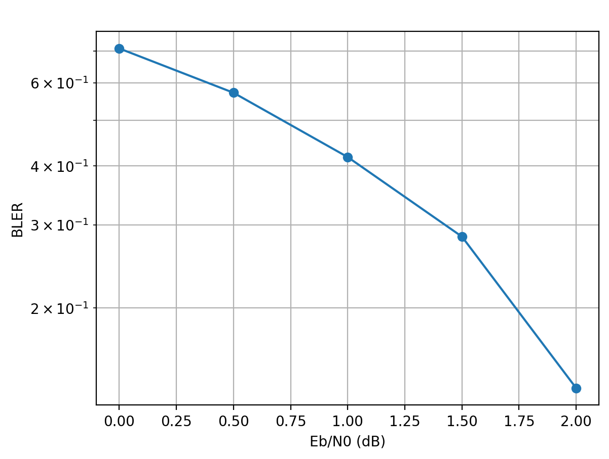
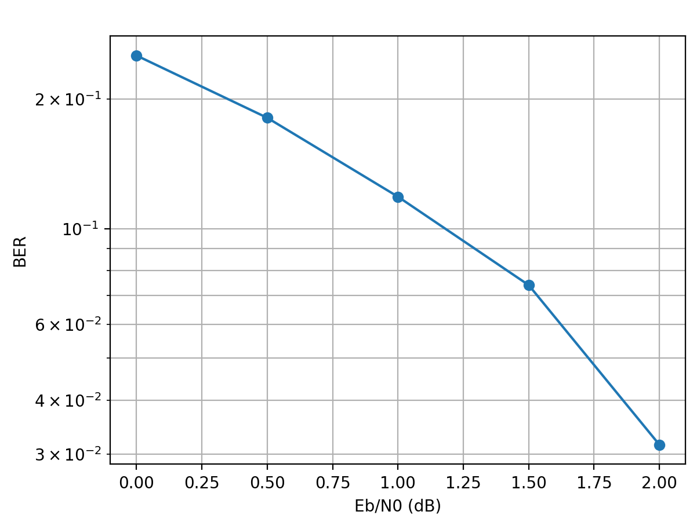

Báo cáo tiến độ nghiên cứu sinh
Nghiên cứu sinh: Đinh Văn Nam
GV Hướng dẫn 1: TS. Nguyễn Công Lượng
GV Hướng dẫn 2: TS. Lê Văn Thuận
Hà Nội, Ngày báo cáo: 30/03/2026
Mã Polar là mã đầu tiên đạt dung lượng Shannon, then chốt cho 5G eMBB Control Channel.
Dung hòa: Neural-Assisted SC Decoding
Kế thừa kiến trúc SC, can thiệp bằng Học sâu tại các điểm yếu.
Nghiên cứu hiện nay tập trung tối đa hiệu năng (Coding Gain) nhưng chưa giải quyết triệt để chi phí phần cứng.
Luận án tập trung: Xây dựng mô hình Selective (chọn lọc) để tối ưu đồng thời Hiệu năng và Diện tích/Năng lượng trên FPGA.
"Chỉ sử dụng Học sâu tại các điểm mơ hồ, dễ lan truyền lỗi thay vì thay thế toàn bộ."
Nghiên cứu tập trung vào độ tin cậy của node lá trong cây giải mã SC.
Hybrid Polar Decoder Core
Một quyết định sai tại node đầu chuỗi sẽ gây lan truyền lỗi xuyên suốt block qua Partial Sums.
| Phương pháp | Nguyên lý | Đánh giá HW |
|---|---|---|
| 1. LLR Refinement | Tiền xử lý nhiễu. | Tốn tài nguyên. |
| 2. Post-Correction | Sửa lỗi sau giải mã. | Trễ xử lý lớn. |
| 3. Selective Assistance | Hỗ trợ tại các node lá. | Tối ưu, song song tốt. |
Phân tích kết quả:
Đặc tuyến BER/BLER cho thấy hiệu năng giải mã SC thuần túy khá thấp đối với mã ngắn. Tại 2.0 dB, BLER vẫn ở mức xấp xỉ 0.13 và BER xấp xỉ 0.03. Kết quả này tạo ra một "Coding Gap" lớn, là cơ sở để module Neural can thiệp nhằm cải thiện hiệu năng giải mã.

Đồ thị BLER vs Eb/N0

Đồ thị BER vs Eb/N0
| Kiến trúc | Hiệu năng | HW Resource | Độ trễ |
|---|---|---|---|
| SC | Thấp | Tối ưu | Thấp |
| SCL (L=8) | Cao | Cao | Trung bình |
| Selective NN-SC | Khá / Cao | Trung bình | Trung bình |
Keras Model → Quantized C → RTL Verilog → Quartus → FPGA LP2900
Q&A - Câu hỏi và Thảo luận
Nghiên cứu sinh: Đinh Văn Nam